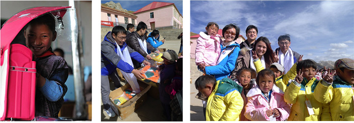
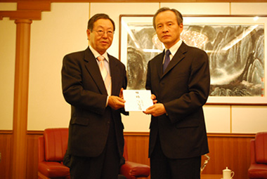

每年都会组织员工远赴青海5所希望小学，向贫困学生捐献文具、衣服等爱心物资。
1、2012年向中国青海地区的小学生捐赠书包等物资，价值200万人民币
2、2013青海 关爱玛多行

中国驻日大使馆崔天凯大使接受NITORI社长似鸟昭雄的捐款
中国驻日大使馆崔天凯大使接受NITORI社长似鸟昭雄的捐款
在2008年四川大地震的时候，NITORI总公司向地震灾区捐献1亿日圆（约600万
人民币），公司员工也自发向灾区捐款捐物，如棉被，席子，毛巾等等。

2005年，德仁专项教育基金（以下简称德仁基金）成立。"德仁"意为：得道多助,仁义至爱。
德仁基金秉承认真做事、塌实做人的原则，在援助过程中不大张旗鼓，不宣传企业、个人，用真心去奉献，努力践行润物于无声的慈善公德。德仁基金旨在用自己的力量，通过捐献来帮助中国的贫困地区发展教育事业，资助困难学生，救助贫困孤儿及单亲儿童，为中国的教育事业和经济发展做出贡献。